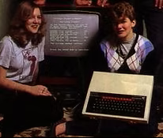
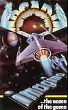

1982 - Birth of the Spectrum
Taken from zxgoldenyears.org — written by R. Tayler
By December 1981 250,000 ZX81s had been sold, giving Sinclair the largest home computer customer base in the world. By 1982, however, colour micros with larger memories were arriving from America and the new computer-owning public in Britain eagerly anticipated Sinclair’s response.
Unlike other youth-driven fads, computing was initially held in high esteem. It was hard for anyone other than the most devout luddite to disapprove of something that so clearly represented the future. Partly thanks to the backing of schools, parents felt compelled to encourage their children to take an interest in computers, lest they jeopardise their prospects.
In 1981, the BBC had announced it was looking to commission a new computer for use in educational programmes. Sinclair was keen to win the tender, realising the commercial value of such an endorsement. To his chagrin, however, the contract went to Acorn, run by old employee Chris Curry. Acorn’s computer, originally named Proton, was released as the BBC Micro and became the choice of schools and many middle-class families. For a while it looked as though Acorn had aced Sinclair, until Sinclair played his trump card: the ZX Spectrum.

The BBC Micro offered a great deal more than the ZX81: it had colour, sound, a proper typewriter-style keyboard, and a whopping 32K of memory. It also had the backing of schools, which lent it an official seal of approval that would appeal to the parents of budding computer users. It had one weakness, though, that Sinclair knew all about exploiting: its price. The BBC Model B retailed at £399, and the less powerful Model A at £299. Sinclair knew that if he could sell his new computer for less than £200, Acorn would have no reply.
Research into a more advanced computer than the Spectrum had been ongoing for some time, but a swift response to the BBC Micro was needed, so these designs were ditched in favour of something less ambitious. To control costs, the new machine was to use as much of the ZX81’s technology as possible. Plans for a Spectrum Super BASIC programming language were scrapped and an improved version of the old ZX BASIC used instead. Rather than a proper keyboard, the questionable ‘dead flesh’ model was employed, crammed with multiple functions, which would baffle novices and irritate older hands.
A saving grace was its aesthetic appeal. Where the BBC Micro was a cumbersome beast, the Spectrum was small and sleek. Its rubber keys looked ergonomic next to the stone tablets of other computers, and it was black, not a grim beige or cheerless grey. On the surface, it looked high-tech.
The ZX Spectrum

The ZX Spectrum was launched in April 1982 in two forms: a 16K and 48K model, for £125 and £175 respectively. There were grumbles from the computer press about its keyboard and processing power, but it didn’t matter a jot. Sinclair was releasing a much-anticipated computer into a market too young have high expectations. It may not have been the polished all-rounder experts had been hoping for, but it was cheap, capable and came from a man who had been marketed as the trustworthy face of new technology.
As with previous Sinclair products, initial sales were by mail order only. And like the ZX81, demand far exceeded supply. By July, there was a backlog of 30,000 orders. If that were not bad enough, Timex, who built the Spectrum, shut down in mid-July for a three-week annual holiday. By the time production resumed, the backlog had hit 40,000 and angry letters were pouring into Sinclair as quickly as orders. It’s astounding in hindsight that a company with experience of supply problems had not learnt from its mistakes – evidence, if it were needed, that in certain areas Sinclair's business acumen left a lot to be desired. Clive Sinclair made a personal apology to his customers, along with a promise that all orders would be fulfilled by the end of September. The crisis was tempered by the fact that ZX81 sales had hardly been diminished by the new computer's release.
The Spectrum was not released into a market bereft of competition. The BBC Micro was well established and several other computers were launched in the same year: the Dragon 32, the NewBrain from Grundy Business Systems, The Japanese Sord M5, the dismal Oric 1, the impressive Lynx and the Jupiter Ace, created by Steven Vickers and Richard Aftwasser, members of the Spectrum design team. Due to issues with marketing, availability or quality, most sunk without a trace. All except one: the Commodore 64.

Compared to the Spectrum, the Commodore 64 was from the future. It had the VIC-20's full-size keyboard, 64K of memory, a sound chip,16 colours, sprite graphics and a 40-column screen. Like the Spectrum's other challengers, price was its principal weakness: £350 on its UK launch. It would, however, prove to be Sinclair's chief rival for the next five years, even if it never managed to dislodge the Spectrum from the number one spot. In the US, it was utterly dominant, and the way it was aggressively marketed almost put Atari out of business.
By the end of the year, the Spectrum's supply situation was still not completely under control, so Sinclair missed out on fully exploiting the 1982 Christmas period. To improve availability, high street stores Boots, Curry’s and John Menzies were signed up as official retailers of Sinclair products. Some of these stores were also beginning to stock another computing product in demand: software.
The Software Scene
Contrary to the belief of some parents, computers in the home were not being used solely for educational purposes; their main function was for playing games. The practice of writing videogames, once the preserve a few specialists, was now something anyone with a home computer could try. Indeed, many of the earliest games were written by teenage programmers in their bedrooms, and a lot of the original publishers relied exclusively on games sent in by these young enthusiasts, many of whom went onto to work for or create the biggest software houses of the age.
Home computers offered scope for experimentation. There was an ‘anything goes’ attitude to game design that was exhilarating and liberating for programmers and gamers alike. Imaginative new genres that demanded thought, time and patience appeared alongside the inevitable clones of coin-op favourites. This had the effect of demystifying the arcade. Whatever these hulking cabinets could do could now be replicated (to some extent) in your living room. It’s no coincidence that the home computer boom marked the end of the arcade's golden age.
With few preconceptions, people were hungry to play just about anything. There was little understanding of what good or bad looked like, because there was no point of comparison - not on the Spectrum, anyway. No one truly expected their puny home micro to rival a dedicated arcade machine for graphics or sound, but using them to play anything at all felt like witchcraft. Following the lead of Quicksilva, whose Space Intruders was the first commercial release, companies that had established themselves on the ZX81, like Bug Byte and Silversoft, began turning their attention to the Spectrum. By the end of the year, they had been joined by a plethora of new labels, including dK’tronics, Mikrogren, Artic and Hewson.

There was still a dearth of games throughout 1982, and with no distribution system in place, most software firms were making sales via mail order or through local shops. The majority of titles were attempts to convert well-known arcade games such as Galaxian or Scramble to the Spectrum. Others, such as Addictive’s Football Manager were bigger, better versions of ZX81 games. Hewson's Nightflite was a brave attempt at a flight simulator, while MC Lothlorien introduced the wargame to the Spectrum with Warlord and Roman Empire. Adventures made an appearance, too, with Artic releasing four games during the year: Planet of Death, Ship of Doom, Inca Curse and Espionage Island. One of the most significant titles of the year arrived at Christmas with the release of Arcadia from new company Imagine. With Spectrum-owners crying out for a slick arcade shooter, it fitted the bill perfectly and catapulted Imagine towards its short-lived success.